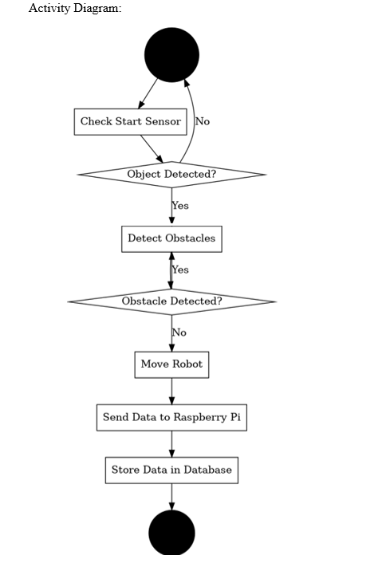

Internet of Things (IoT)
Smart Car Automation & Delivery System
Project Description
The car was equipped with four motors connected to a motor driver for precise movement control. The car is outfitted with ultrasonic sensors for obstacle detection, positioned both in front and above. Additionally, a servo motor is integrated to facilitate the delivery process by pushing stock.
These components are interfaced with an Arduino UNO board serving as the central controller. Using the Arduino IDE, the developed code is to govern the car's movements based on real-time sensor feedback. The sequence begins with the car's top ultrasonic sensor checking for obstacles within a 15 cm range above it. If an obstruction is detected, the car moves forward until it encounters an obstacle within 15 cm in front. Subsequently, it executes a left turn, advances forward again, and concludes by activating the servo motor to perform the stock delivery action. The car then transitions into sleep mode to conserve energy.
Extensive testing procedures have been conducted to validate the car's operational behavior. This includes verifying that it moves forward, executes left turns as required, and accurately activates the servo motor when instructed. Data logging functionality ensures that all operational data is correctly recorded in a MariaDB database and displayed accurately on a web interface.
Technologies Used
Sensors
-
Ultrasonic Sensor
Initiate robot startup via Arduino UNO triggers. -
QR Code Scanner
Measures distance to detect obstacles.
Actuators
-
DC Motors
Full movement control (forward, backward, turn). -
Servo Motor
Steering control for front wheel direction.
Software
-
Arduino
Servo.h NewPing.h -
Python Stack
serial mysql.connector flask
Project Media

Phase 1 Demo
Phase 2 Demo